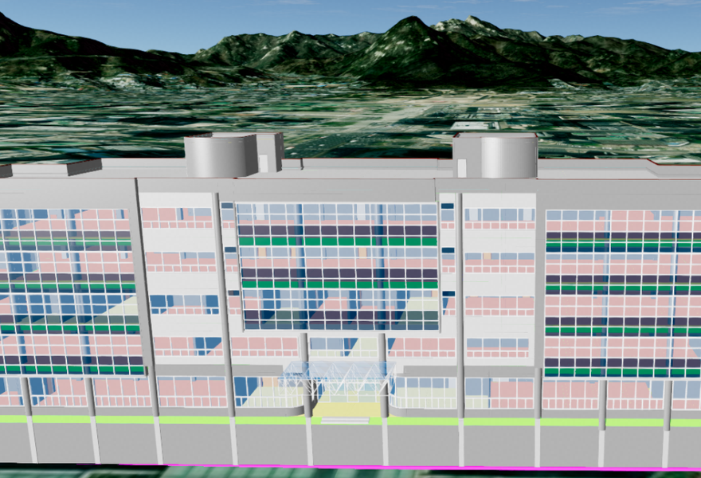
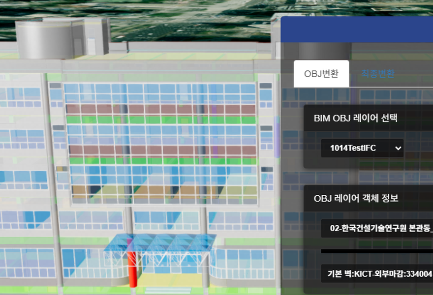

1. BIM Object 레이어 시작하기
* BIM Object 레이어는 건축·시설물의 BIM 데이터를 웹에서 볼 수 있도록 변환한 결과를 불러와 지도 위에 출력하는 레이어입니다.
* BIM 은 건물을 겉모양만이 아니라 기둥·벽·배관처럼 건물을 이루는 부품 하나하나 — 이하 객체 — 의 정보까지 담아 만든 3D 데이터입니다. (표준 파일 형식 : IFC)
* IFC 파일은 웹 브라우저가 바로 그리기에는 무겁기 때문에, 서버에 레이어를 등록할 때 웹용 3D 형식인 OBJ 로 미리 변환됩니다. 이 레이어는 그 변환 결과(OBJ)와 객체 정보(메타데이터)를 함께 사용합니다.
* 그래서 건물을 통째로 보여주는 데서 그치지 않고, 객체 하나하나를 찾아 강조하거나 숨기는 등 개별 제어할 수 있는 것이 특징입니다.
* 레이어는 app.createModelBIMObjLayer(opt) 함수로 생성하며, 필수 옵션이 누락되면 레이어가 생성되지 않고 undefined 가 반환됩니다.
* BIM 은 건물을 겉모양만이 아니라 기둥·벽·배관처럼 건물을 이루는 부품 하나하나 — 이하 객체 — 의 정보까지 담아 만든 3D 데이터입니다. (표준 파일 형식 : IFC)
* IFC 파일은 웹 브라우저가 바로 그리기에는 무겁기 때문에, 서버에 레이어를 등록할 때 웹용 3D 형식인 OBJ 로 미리 변환됩니다. 이 레이어는 그 변환 결과(OBJ)와 객체 정보(메타데이터)를 함께 사용합니다.
* 그래서 건물을 통째로 보여주는 데서 그치지 않고, 객체 하나하나를 찾아 강조하거나 숨기는 등 개별 제어할 수 있는 것이 특징입니다.
* 레이어는 app.createModelBIMObjLayer(opt) 함수로 생성하며, 필수 옵션이 누락되면 레이어가 생성되지 않고 undefined 가 반환됩니다.
app.createModelBIMObjLayer(opt);
opt.layername
string : BIM Object 레이어 고유 이름 *필수 입력
opt.baseurl string : BIM Object 모델 데이터 URL (변환 결과 파일들이 있는 폴더) *필수 입력
opt.serverurl string : 3D 데이터 서버 URL *필수 입력
opt.metaData object : 서버 등록 시 생성된 BIM 메타데이터 (files 정보 포함) *필수 입력
opt.name string : 레이어 이름. 기본값 'U3dModelBIMObjLayer'
opt.autoHeight boolean : 지형 고도에 맞춰 모델 높이를 자동으로 맞출지 여부
opt.useproxy boolean : 프록시 사용 여부. 기본값 false
opt.proxyurl string : 프록시 URL. 기본값 './proxy.jsp?url='
opt.baseurl string : BIM Object 모델 데이터 URL (변환 결과 파일들이 있는 폴더) *필수 입력
opt.serverurl string : 3D 데이터 서버 URL *필수 입력
opt.metaData object : 서버 등록 시 생성된 BIM 메타데이터 (files 정보 포함) *필수 입력
opt.name string : 레이어 이름. 기본값 'U3dModelBIMObjLayer'
opt.autoHeight boolean : 지형 고도에 맞춰 모델 높이를 자동으로 맞출지 여부
opt.useproxy boolean : 프록시 사용 여부. 기본값 false
opt.proxyurl string : 프록시 URL. 기본값 './proxy.jsp?url='
* 생성한 레이어는 .ready().then() 안에서 app.showLayer(layername, true) 로 가시화합니다.
const opt = {
name: 'bim Layer', // 레이어 이름
layername: 'bim Layer', // 레이어 고유 이름 *필수
baseurl: 'https://.../data/bim/', // 변환 결과 데이터 폴더 URL *필수
serverurl: 'https://3d-dev.geon.kr/', // 3D 데이터 서버 *필수
metaData: layerInfo.metaData, // 서버 등록 시 생성된 메타데이터 *필수
autoHeight: true, // 지형 고도 자동 맞춤
};
const bimLayer = app.createModelBIMObjLayer(opt);
// 로딩이 끝난 후 실행
bimLayer.ready.then(() => {
app.showLayer('bim Layer', true).then(() => {
app.fitLayerExtent('bim Layer'); // 레이어로 카메라 이동
});
}).catch((e) => {
console.error('레이어 생성 실패 : ' + e);
});
2. 객체 구조 살펴보기
* 하나의 BIM 레이어는 여러 개의 모델 파일로 구성되며, 각 파일 안에 객체들이 트리 구조로 들어 있습니다.
* getFileNames() 는 레이어에 포함된 모델 파일 이름 목록을 돌려줍니다. 이후 모든 객체 제어 함수는 이 파일 이름을 첫 번째 인자로 받습니다.
* getMateDataTree(fileName) 은 해당 파일의 객체 메타데이터 트리를 돌려줍니다. 트리는 traverse(콜백) 으로 순회할 수 있고, 각 객체는 getId() 로 고유 번호를 얻습니다.
* getFileNames() 는 레이어에 포함된 모델 파일 이름 목록을 돌려줍니다. 이후 모든 객체 제어 함수는 이 파일 이름을 첫 번째 인자로 받습니다.
* getMateDataTree(fileName) 은 해당 파일의 객체 메타데이터 트리를 돌려줍니다. 트리는 traverse(콜백) 으로 순회할 수 있고, 각 객체는 getId() 로 고유 번호를 얻습니다.
U3dModelBIMObjLayer.getFileNames ()
return
Array : 레이어에 포함된 모델 파일 이름 목록
U3dModelBIMObjLayer.getMateDataTree (fileName)
fileName
string : 조회할 모델 파일 이름 *필수 입력
return object : 객체 메타데이터 트리
return object : 객체 메타데이터 트리
for (const fileName of bimLayer.getFileNames()) {
const metaTree = bimLayer.getMateDataTree(fileName);
metaTree.traverse((meta) => {
console.log(meta.getId()); // 객체의 고유 ID
});
}
* 객체의 고유 ID를 알면 getObjectById 로 3D 객체(mesh)를, getMetaById 로 메타데이터를 각각 조회할 수 있습니다.
U3dModelBIMObjLayer.getObjectById (fileName, id)
fileName
string : 모델 파일 이름 *필수 입력
id string : 객체의 고유 ID *필수 입력
return Object3D : 해당 객체의 3D 객체
id string : 객체의 고유 ID *필수 입력
return Object3D : 해당 객체의 3D 객체
U3dModelBIMObjLayer.getMetaById (fileName, id)
fileName
string : 모델 파일 이름 *필수 입력
id string : 객체의 고유 ID *필수 입력
return object : 해당 객체의 메타데이터
id string : 객체의 고유 ID *필수 입력
return object : 해당 객체의 메타데이터
const object = bimLayer.getObjectById(fileName, id); // 객체의 3D 객체(mesh)
const meta = bimLayer.getMetaById(fileName, id); // 객체의 메타데이터
3. 객체 강조 · 숨기기 · 투명도
* select 는 특정 객체(하위 객체 포함)를 색상으로 강조합니다. 기본 색상은 빨강(0xff0000)입니다.
* clear() 는 select 로 변경된 색상을 모두 원래대로 되돌립니다.
* clear() 는 select 로 변경된 색상을 모두 원래대로 되돌립니다.
U3dModelBIMObjLayer.select (fileName, id, color)
fileName
string : 모델 파일 이름 *필수 입력
id string : 강조할 객체의 고유 ID *필수 입력
color Color : 강조 색상. 기본값 0xff0000 (빨강)
id string : 강조할 객체의 고유 ID *필수 입력
color Color : 강조 색상. 기본값 0xff0000 (빨강)
* setOpacity 는 레이어 전체 또는 특정 파일의 투명도를 바꿉니다. (첫 번째 인자가 투명도인 점에 주의)
* resetOpacity 는 변경한 투명도를 원래대로 되돌립니다.
* resetOpacity 는 변경한 투명도를 원래대로 되돌립니다.
U3dModelBIMObjLayer.setOpacity (opacity, fileName)
opacity
number : 투명도 (0 ~ 1) *필수 입력
fileName string : 대상 모델 파일 이름. 생략하면 레이어 전체에 적용
fileName string : 대상 모델 파일 이름. 생략하면 레이어 전체에 적용
U3dModelBIMObjLayer.resetOpacity (fileName)
fileName
string : 대상 모델 파일 이름. 생략하면 레이어 전체에 적용
bimLayer.setOpacity(0.6, fileName); // 파일 전체를 반투명하게
bimLayer.select(fileName, meta.getId(), 0xff0000); // 대상 객체만 빨강으로 강조
// 원래대로 되돌리기
bimLayer.clear(); // 강조 색상 해제
bimLayer.resetOpacity(); // 투명도 복원
* showObject 는 특정 객체 하나를 보이거나 숨깁니다. 내부 구조를 확인하려고 벽·지붕을 잠시 감출 때 유용합니다.
U3dModelBIMObjLayer.showObject (fileName, id, visible)
fileName
string : 모델 파일 이름 *필수 입력
id string : 대상 객체의 고유 ID *필수 입력
visible boolean : 가시화 여부. 기본값 false (숨김)
id string : 대상 객체의 고유 ID *필수 입력
visible boolean : 가시화 여부. 기본값 false (숨김)
bimLayer.showObject(fileName, id, false); // 객체 숨기기
bimLayer.showObject(fileName, id, true); // 객체 다시 보이기


4. 위치 제어하기
* 파일 단위로 모델의 위치를 위경도 좌표로 조회·이동할 수 있습니다.
* getPosition(fileName) 은 현재 위치(위경도)를 돌려주고, setPosition(fileName, location) 은 해당 위치로 이동시킵니다.
* resetPosition() 은 메타데이터에 기록된 원래 위치로 복귀시킵니다.
* getPosition(fileName) 은 현재 위치(위경도)를 돌려주고, setPosition(fileName, location) 은 해당 위치로 이동시킵니다.
* resetPosition() 은 메타데이터에 기록된 원래 위치로 복귀시킵니다.
U3dModelBIMObjLayer.setPosition (fileName, location)
fileName
string : 모델 파일 이름 *필수 입력
location object : 이동할 위경도 좌표 {x: 경도, y: 위도, z: 높이} *필수 입력
location object : 이동할 위경도 좌표 {x: 경도, y: 위도, z: 높이} *필수 입력
const location = bimLayer.getPosition(fileName); // 현재 위치 (위경도)
location.z = location.z + 10; // 10m 위로
bimLayer.setPosition(fileName, location); // 위치 적용
bimLayer.resetPosition(); // 원래 위치로 복귀
* setAutoHeight 는 지형(Terrain)의 고도 값을 읽어 모델 바닥을 지면 높이에 자동으로 맞춥니다. 생성 옵션 autoHeight 와 같은 기능을 생성 후에 적용하는 함수입니다.
U3dModelBIMObjLayer.setAutoHeight (autoHeight)
autoHeight
boolean : true 면 지형 고도에 맞춤, false 면 원래 높이로 복귀
bimLayer.setAutoHeight(true); // 모델 바닥을 지형 높이에 맞춤
bimLayer.setAutoHeight(false); // 원래 높이로 복귀